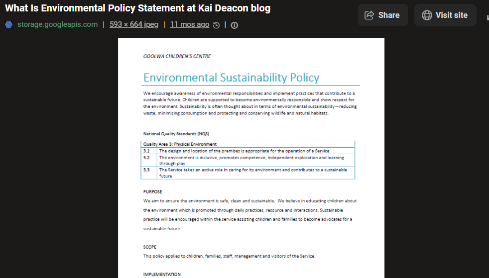

EcoTrack Dashboard
2025

About This Project
A dashboard that helps users track their carbon footprint based on daily activities. Users can log transportation, energy usage, and waste to see their environmental impact.
What I Did
- Built responsive frontend with HTML5, CSS3, and JavaScript
- Created data visualization charts using Chart.js
- Implemented local storage for user preferences
- Designed mobile-first layout with Flexbox and Grid